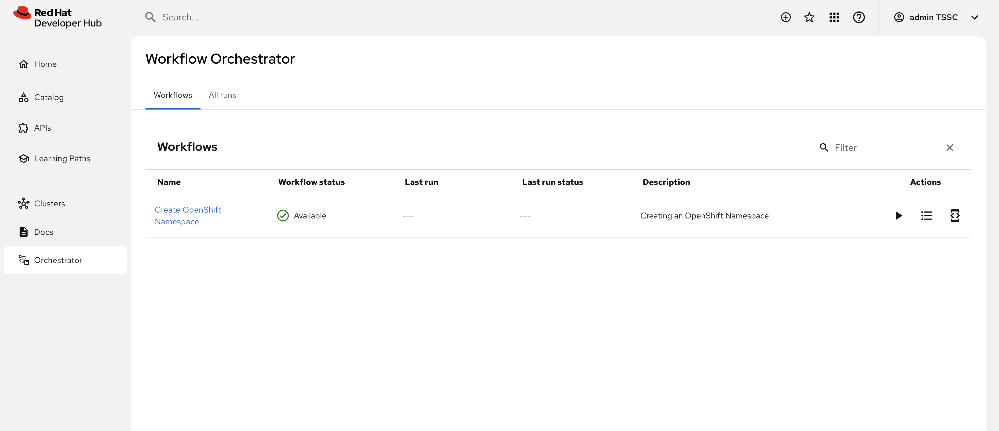
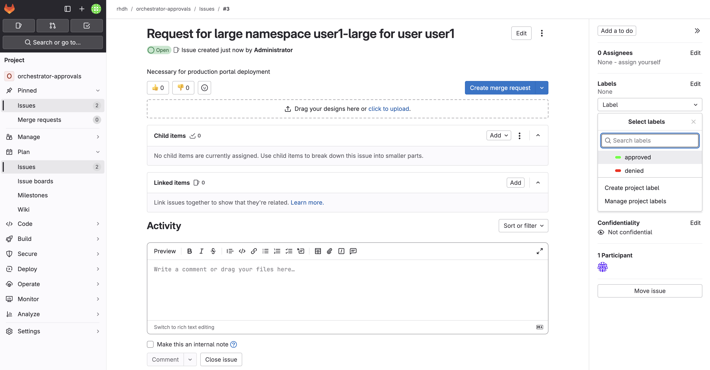

Platform Engineer Activity: Enable The Orchestrator Plugin and Developer Self-Service
Until now we have discussed Software Templates as a means for developers to accelerate their daily inner-loop activities. But Software Templates can do a lot more, like allowing developers to provision and deploy infrastructural components (like virtual machines and even complete OpenShift clusters) and application middleware components like message brokers and databases.
Software templates can achieve this through custom plugins that interact with tools like Ansible and OpenShift API servers.
But, in real life, these developer self-service requests might require more than what a Software Template can provide. For example, for certain activities an approval step might be required. This is where the Orchestrator plugin comes in.
The Orchestrator plugin acts as an interface between {product_name_rhdh} and Serverless Workflow. Serverless Workflow is a cloud-native workflow engine which allows to design, deploy and execute arbitrarily complex workflows which can integrate with external systems through several mechanisms.
The Orchestrator plugin is also integrated with the Notifications plugin, which allows users or groups to be notified of milestones in the workflow execution.
This is a high level architectural overview of the Orchestrator:
As a use case for Developer Self-Service we are going to look at a pretty simple use case: a Developer can request a namespace on an OpenShift cluster. The namespace has limited resources, defined by resource quota and limit ranges. In our case, the namespaces come in two sizes, small and large. Large namespaces however require an approval.
Please make sure to log in as a Platform Engineer with pe1 / {common_password}. Refer to the below guide for assistance.
|
Click to learn how to login as a Platform Engineer
Unresolved include directive in modules/ROOT/pages/orchestrator-overview.adoc - include::../login-pe.adoc[]
Configure the Orchestrator Plugin
-
Visit your rhdh/developer-hub-config repository on GitLab.
-
Open the
values.yamlfile, then select Edit > Edit single file. -
Uncomment the
--- ORCHESTRATOR PLUGIN ---section in thedynamic.pluginssection of the YAML, to enable the Orchestrator and Notification dynamic plugins.To uncomment multiple lines of code, highlight the lines and press
CMD + /(on macOS) orCTRL + /(on Linux/Windows).Note that the orchestrator plugin is not yet bundled with Red Hat Developer Hub, and needs to be referenced as an external package
@redhat/backstage-plugin-orchestrator-backend-dynamic@1.4.0, which will be downloaded from the configured npm registry. -
Look for the YAML between the
--- ORCHESTRATOR PLUGIN ---block further down in the file and uncomment it.This section contains configuration for the orchestrator plugin.
-
Commit your changes with the message
feat: enable orchestrator plugin. -
Click the Refresh button on the
backstageApplication in OpenShift GitOps.
Verify that the Orchestrator and Notification plugins are enabled
-
After a few moments your new {product_name_rhdh} configuration will finish rolling out. Visit your instance of {product_name_rhdh} and view the Home page. Note two new menu items in the left-hand side menu, Orchestrator and Notifications.
-
Select Orchestrator from the left-hand side menu.
This page shows the list of workflows that are available to the {product_name_rhdh} users. As expected, the list is empty because no workflows have been deployed yet. You will do so later in this chapter.
-
Select Notifications from the side menu.
This page shows the notifications for the logged in user. As expected, the list is empty, as no notifications have been emitted yet.
Import Software templates for Developer Self Service.
To illustrate the possibilities of the Orchestrator plugin, let’s imagine the following use case: a developer requests a namespace in an OpenShift cluster. Namespaces are limited with resource quota and limits. They come in two sizes, small and large, where the large namespace enables more resources. The large namespace requires approval.
The workflow instance that will be deployed later in the lab launches a software template, eventually after approval, to create a namespace for the user.
So before deploying the workflow itself, we need to import the software templates to create the namespace.
The Software Templates for Developer Self Service are referenced in the location.yaml file in the rhdh/template-developer-self-service repository in GitLab.
Register this template using the {product_name_rhdh} UI:
-
Login to your instance of {product_name_rhdh} as the
pe1user with password{common_password}. -
Select the icon on the top navigation bar to access the Self-service menu.
-
Click the Register Existing Component button.
-
Enter the following URL in the Select URL field and click Analyze:
https://gitlab-gitlab.{openshift_cluster_ingress_domain}/rhdh/template-developer-self-service/-/blob/main/location.yaml?ref_type=heads -
You’ll be asked to review the entities being imported, as shown:

Three Software Templates will be imported:
namespace-small,namespace-largeandpostgres-15-template. The first two create a small or large namespace, the last one deploys a PostgreSQL instance in a namespace created by the namespace templates. -
Click Import when prompted.
-
Select the icon on the top navigation bar to see the new templates.

The Software Templates to create namespaces are not meant to be used directly, but rather through an Orchestrator Workflow. So while they are visible (and usable) to members of the Platform Engineering group, they are not accessible for developers.
To demonstrate this:
-
Logout from your pe1 user, and log back in as a developer with
dev1/{common_password}. -
Select the icon on the top navigation bar.
-
Note that the
OpenShift Namespace Large Sizeand theOpenShift Namespace Small SizeSoftware Templates do not appear in the Software Template screen.
This is accomplished by applying conditional RBAC rules.
The OpenShift Namespace Large Size and the OpenShift Namespace Small Size Software Templates are annotated with the backstage.io/managed-by: orchestrator annotation, as can be seen in the Template file in GitLab file.
The rbac-conditional-policies.yaml file in the Configmap with RBAC rules (if needed, login with admin/{common_password}) contains the following conditional rule:
conditions:
not:
params:
annotation: backstage.io/managed-by
value: orchestrator
resourceType: catalog-entity
rule: HAS_ANNOTATION
permissionMapping:
- read
pluginId: catalog
resourceType: catalog-entity
result: CONDITIONAL
roleEntityRef: role:default/location_read_developer
This rule states that users with the role default/location_read_developer can see all catalog entities, except those with an annotation backstage.io/managed-by and value orchestrator. The developers group (to which the dev1 user belongs) has the role default/location_read_developer as can be seen in the rbac-policy.csv file in the ConfigMap.
Deploy the Serverless Workflow
A Serverless Workflow is deployed through a SonataFlow Custom Resource. As with the other deployments in this workshop, we use GitOps and ArgoCD to deploy the Serverless Workflow.
-
Click on the Copy file contents button on the top right menu.
-
Visit the OpenShift console in your OpenShift cluster. If needed, login as
admin/{common_password} -
Click the import button on the top right menu
-
Paste the ArgoCD manifest in the editor. Click the Create button.
-
Verify in the Orchestrator namespace in OpenShift that a pod is created for the Serverless Workflow instance. The pod name starts with
create-ocp-namespace-swt. -
Visit your instance of {product_name_rhdh}. Ensure you’re logged in as a Platform Engineer.
Click to see how
-
Navigate to {product_name_rhdh}'s Settings screen and check the logged-in user’s name under the Profile section.
-
If you are not logged in as a Platform Engineer (
peuser), Click on Sign Out. -
Log in as
pe1/{common_password}.
-
-
Select the Orchestrator item in the left-hand menu.
-
Notice that the
Create OpenShift NamespaceWorkflow is available.
Developer Activity: Execute the Serverless Workflow
Log out of {product_name_rhdh} and log in again as a Developer with dev1 / {common_password}.
Click to learn how to login as a Developer
Unresolved include directive in modules/ROOT/pages/orchestrator-overview.adoc - include::../login-developer.adoc[]
-
Select the Orchestrator item in the left-hand menu.
-
Click on the Create OpenShift Namespace workflow.

-
Expect to see the workflow definition and a graphical representation of the workflow.
The workflow itself is pretty simple: if the user requests a small namespace to be created, the workflow launches the relevant software template (no approval required). It checks the state of the software template execution and notifies the user of success or failure.
If a large namespace is requested, the request needs to be approved. For simplicity reasons, we use issues in a GitLab repo as a ticketing system (in real life that would probably be ServiceNow or Jira or an equivalent system). If the request is approved, the software template is executed and the user notified. If the request is denied, the user is notified as well, but no namespace is created.
-
Click on the Run button at the top right of the screen to start an instance of the workflow.
-
You are presented with a form to enter the details of your request. Let’s start with a request for a small namespace. Fill in the form as follows:
-
Namespace name:
dev1-small-1 -
Requester:
dev1 -
Size:
small -
Reason: you can leave this blank
-
Recipients:
user:default/dev1
-
-
Click on Next. Expect to see an overview of your request.
-
Click on Run to start the workflow execution.

-
After a few seconds the status of the workflow moves to Run completed.
-
Select the Notifications item in the left-hand menu.
-
Notice a notification that the namespace
dev1-small-1has been created. -
If you click on the notification link, you will see the component that was created as a result of the execution of the software template.
-
Visit the Namespace in the OpenShift console in your OpenShift cluster. If needed, login as
admin/{common_password}. Click on Administration/ResourceQuotas and Administration/LimitRanges on the left-hand side menu to see the resource quota and limit ranges defined as part of the creation of the namespace. -
Return to the tab of {product_name_rhdh} to run another instance of the workflow, this time for a large namespace request.
-
Select the Orchestrator item in the left-hand menu.
-
Click the Run icon on the left of the workflow name.
-
Fill in the form as follows:
-
Namespace name:
dev1-large-1 -
Requester:
dev1 -
Size:
large -
Reason:
I need this for my project -
Recipients:
user:default/dev1
-
-
Click on Next and Run to start the workflow.
-
Select the Notifications item in the left-hand menu. After a couple of seconds you will see a notification that an issue has been created in GitLab.
-
Click on the link of the notification. This opens the issue in GitLab.

-
GitLab is not a ticketing system. To mimic the behavior of a ticketing system, we use labels on the issue to mark the request as approved or denied.
-
Make sure you are logged in into GitLab as
pe1/{common_password}. -
Click on the Edit button next to Labels on the right.

-
Select the Approved label.
-
To actually add the label, you need to click on a different area of the page, outside of the Labels area.
-
-
Return to the tab of {product_name_rhdh}. After a while you should see a notification that the namespace
dev1-large-1has been created.
The workflow instance checks the status of GitLab issue at a regular interval (every 60 sec. in this case). When the workflow detects the Approved label on the issue, it proceeds to create the namespace and closes the ticket afterwards.
-
You can check the Namespace in the OpenShift console in your OpenShift cluster.
Also notice that the Issue in GitLab has been closed by the workflow.
-
Feel free to create another request for a large namespace, but this time label the issue as Denied. In this case, you should see a notification in {product_name_rhdh} that the request was denied, and there should be no namespace created in OpenShift.
Conclusion
In this module you learnt how the {product_name_rhdh} Orchestrator plugin, in combination with Serverless Workflow on OpenShift enables more complex workflows that go beyond what Software Templates can do. The possibilities are endless, and in this module we illustrated these possibilities with a relatively simple example that involves approval and notification as part of a developer self-service experience.